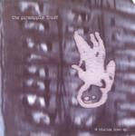

| Artist: | Pineapple Thief |
| Title: | 4 Stories Down |
| Label: | Cyclops CYCL |
| Length(s): | minutes |
| Year(s) of release: | 2005 |
| Month of review: | [07/2005] |
| 1) | Clapham | 4.28 |
| 2) | Wretched Soul | 4.54 |
| 3) | The Ground Floor | 4.58 |
| 4) | Subside (13th Floor Mix) | 7.03 |
Wretched Soul is more in the vein of Muse and maybe a bit of Underworld: hard-edged, a bit rawer and a bit more rhythm oriented. The middle part for instance is quite hard-hitting, harder than I have ever heard the band be, a bit harder than even most metal bands I know: the sound is really harsh on this one (even if they offer us a breather now and then), but it does come over well. Yes, the description Muse quite covers it.
The Ground Floor is a slow builder, with music building up, and then taking a step back again. There is something quirky about the song, but it also has the abundant vocal harmonies we have come to expect from the band. A rather catchy tune, but not as strong as the average Pineapple Thief song.
Subside which was one of the high points of the previous album is present in a lengthy 13th Floor Mix. The song has elements of the dreamy side of No-Man. The melody is wonderful, the song is full of reverberating sounds evoking sunlight dispersed by glass. A hallucinating experience.